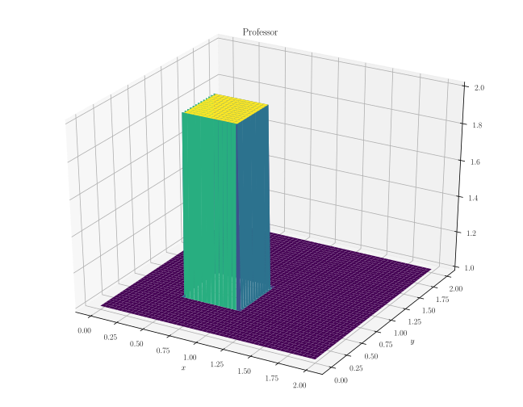
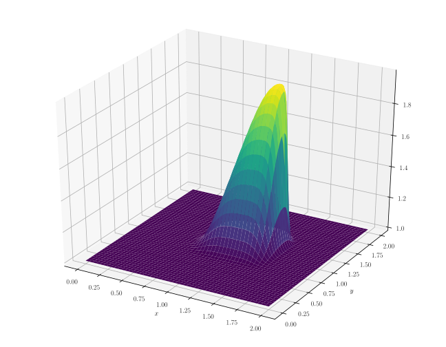

This ‘notebook’ consists of my run-through of Prof. Lorena Barba’s “12 steps to Navier-Stokes” course, because I admit I have a problem with fluids. The Navier-Stokes equations that will be solved in this notebook are the following in conservative form:
$$ \frac{\partial \rho}{\partial t} + \nabla \cdot \left(\rho V\right) = 0 $$
$$ \frac{\partial (\rho\vec V)}{\partial t} + \nabla \cdot \left(\rho ,\vec V \otimes \vec V + p\hat I \right) = \rho \vec g + \nabla \cdot \hat \tau + \vec f$$
where $\rho$ is the density of the fluid, $\vec V$ denotes the velocity, $p$ denotes the pressure, $\tau$ denotes the stresses, and $f$ denotes body forces. The flows in this tutorial are incompressible cases in which the density is considered constant, so the energy equation is not solved.
The goal of this exercise to solve these equations numerically for some simple cases, starting from the ground-up. It is set in a “professor first, student next” fashion, with the student developing the stock functions with his/her own ideas. The development is presented in order of relevance to the corresponding steps rather than chronologically. Most of the partial differential equations here are numerically solved using forward difference methods in time and backward difference methods in space.
Programming CFD methods is crucial in understanding how fluid solvers work because it allows one to learn about all possible points of error when running analyses through industrial software/packages, reducing debugging time in the long run.
Python Libraries
import numpy
import sympy
from sympy import init_printing
from sympy.utilities.lambdify import lambdify
import time, sys
from matplotlib import rc, pyplot, cm
from sympy import init_printing
from mpl_toolkits.mplot3d import Axes3D
import timeit
init_printing(use_latex=True)
rc('font',**{'family':'serif'})
rc('text', usetex=True)
Step 1: 1D Linear Convection
Professor
Partial differential equation:
$$ \frac{\partial u}{\partial t} + c\frac{\partial u}{\partial x} = 0 $$
Discretised:
$$ \frac{u^{n+1}_i - u^n_i}{\Delta t} + c\frac{u^n_i - u^n_{i-1}}{\Delta x} = 0 $$
Initial condition:
$$ u(x,0)= \begin{cases} 2, & x \in [0.5,1] \\ 1, & \mathrm{everywhere;else} \end{cases} $$
nx = 41
dx = 2.0/(nx-1)
nt = 20
dt = 0.025
c = 1.0
u = numpy.ones(nx)
u[int (.5/dx): int(1/dx + 1)] = 2.0
print(u)
pyplot.figure(1, figsize=(9,4), dpi=300)
pyplot.title('Professor')
pyplot.plot(numpy.linspace(0,2,nx), u)
for n in range(nt):
un = u.copy()
for i in range(1,nx):
u[i] = un[i] - c*dt/dx*(un[i] - un[i-1])
pyplot.figure(2, figsize=(9,4), dpi=300)
pyplot.title('Professor')
pyplot.plot(numpy.linspace(0,2,nx), u)
pyplot.show()
[1. 1. 1. 1. 1. 1. 1. 1. 1. 1. 2. 2. 2. 2. 2. 2. 2. 2. 2. 2. 2. 1. 1. 1.
1. 1. 1. 1. 1. 1. 1. 1. 1. 1. 1. 1. 1. 1. 1. 1. 1.]

Student
No time to lose. (Down with mutability!)
def linearConvection(nx):
dx = 2.0/nx
nt = 21
dt = 0.025
c = 1
x = numpy.linspace(0,2,nx)
u = numpy.ones((nt,nx))
u[0][int (.5/dx): int(1/dx +1)] = 2.0
for n in range(nt-1):
for i in range(1,nx):
u[n+1][i] = u[n][i] - c*dt/dx*(u[n][i] - u[n][i-1])
pyplot.figure(1,figsize=(7,3), dpi=300)
pyplot.title('Student')
pyplot.plot(x, u[0], label='Initial')
pyplot.plot(x, u[nt-1], label='Final')
pyplot.xlabel('Position (m)')
pyplot.ylabel('Velocity (m/s)')
pyplot.legend()
linearConvection(40)

Step 2: 1D Nonlinear Convection
Professor
Partial differential equation:
$$ \frac{\partial u}{\partial t} + u\frac{\partial u}{\partial x} = 0 $$
Discretised:
$$ \frac{u^{n+1}_i - u^n_i}{\Delta t} + u^n_i\frac{u^n_i - u^n_{i-1}}{\Delta x} = 0 $$
Initial condition:
$$ u(x,0)= \begin{cases} 2, & x \in [0.5,1] \\ 1, & \mathrm{everywhere;else} \end{cases} $$
nx = 41
dx = 2.0/(nx-1)
nt = 20
dt = 0.025
u = numpy.ones(nx)
u[int (.5/dx): int(1/dx + 1)] = 2.0
pyplot.figure(figsize=(9,4), dpi=300)
pyplot.title('Professor')
pyplot.plot(numpy.linspace(0,2,nx), u)
for n in range(nt):
un = u.copy()
for i in range(1,nx):
u[i] = un[i]*(1 - dt/dx*(un[i] - un[i-1]))
pyplot.plot(numpy.linspace(0,2,nx), u)
pyplot.show()

Student
def nonLinearConvection(nx):
dx = 2.0/nx
nt = 20
dt = 0.025
x = numpy.linspace(0,2,nx)
u = numpy.ones((nt,nx))
u[0][int (.5/dx): int(1/dx + 1)] = 2.0
for n in range(nt-1):
for i in range(1,nx):
u[n+1][i] = u[n][i]*(1 - dt/dx*(u[n][i] - u[n][i-1]))
return x, u
pos, vel = nonLinearConvection(40)
# Plotting
pyplot.figure(1,figsize=(7,3), dpi=300)
pyplot.title('Student')
pyplot.plot(pos, vel[0], label='Initial')
pyplot.plot(pos, vel[-1], label='Final')
pyplot.xlabel('Position (m)')
pyplot.ylabel('Velocity (m/s)')
pyplot.legend()
pyplot.show()
Investigation: CFL Condition
Professor
Courant number:
$$ \sigma = \frac{u\Delta t}{\Delta x} \leq \sigma_{\max} $$
def linearconv(nx):
dx = 2.0/(nx-1)
nt = 20
c = 1.0
sigma = 0.5
dt = sigma*dx
u = numpy.ones(nx)
u[int (.5/dx): int(1/dx + 1)] = 2.0
pyplot.figure(1, figsize=(9,4), dpi=300)
pyplot.title('Professor')
pyplot.plot(numpy.linspace(0,2,nx), u)
for n in range(nt):
un = u.copy()
for i in range(1,nx):
u[i] = un[i] - c*dt/dx*(un[i] - un[i-1])
pyplot.plot(numpy.linspace(0,2,nx), u)
linearconv(501)

Student
This function allows you to input the simulation time and time-step size and provides warnings if the Courant Number is greater than 1 with recommendations.
def linearConvectionCFL(mesh_size, time, dt):
dx = 2.0/mesh_size
c = 1
time_steps = int(time/dt)
sigma_max = dt/dx
if sigma_max > 1:
correct_dt = dx
print(f'Warning: CFL Number greater than 1. Solver will probably produce incorrect results. Maximum time-step should be {correct_dt}')
# Initial condition definition
x = numpy.linspace(0,2,mesh_size)
u = numpy.ones((time_steps,mesh_size))
u[0][int (.5/dx): int(1/dx + 1)] = 2.0
for n in range(time_steps-1):
for i in range(1,mesh_size):
u[n+1][i] = u[n][i] - c*dt/dx*(u[n][i] - u[n][i-1])
return x, u
pos, vel = linearConvectionCFL(100, 0.2, 0.021)
# Plotting
pyplot.figure(1,figsize=(7,3), dpi=300)
pyplot.title('Student')
pyplot.plot(pos, vel[0], label='Initial')
pyplot.plot(pos, vel[-1], label='Final')
pyplot.xlabel('Position (m)')
pyplot.ylabel('Velocity (m/s)')
pyplot.legend()
pyplot.show()
Warning: CFL Number greater than 1. Solver will probably produce incorrect results. Maximum time-step should be 0.02.

Step 3: Diffusion Equation in 1D
Professor
Partial differential equation:
$$ \frac{\partial u}{\partial t} = \nu \frac{\partial^2 u}{\partial x^2} $$
Discretised:
$$ \frac{u^{n+1}_i - u^n_i}{\Delta t} = \nu\frac{u^n_{i+1} - 2u^n_i + u^n_{i-1}}{(\Delta x)^2} $$
Initial condition:
$$ u(x,0)= \begin{cases} 2, & x \in [0.5,1] \\ 1, & \mathrm{everywhere;else} \end{cases} $$
nx = 41
dx = 2.0/(nx-1)
nt = 20
nu = 0.3
sigma = 0.2
dt = sigma*dx**2/nu
u = numpy.ones(nx)
u[int (.5/dx): int(1/dx + 1)] = 2.0
print(u)
pyplot.figure(1, figsize=(9,4), dpi=300)
pyplot.title('Professor')
pyplot.plot(numpy.linspace(0,2,nx), u)
for n in range(nt):
un = u.copy()
for i in range(1,nx - 1):
u[i] = un[i] + nu*dt/dx**2*(un[i+1] - 2*un[i] + un[i-1] )
pyplot.plot(numpy.linspace(0,2,nx), u)
pyplot.show()
[1. 1. 1. 1. 1. 1. 1. 1. 1. 1. 2. 2. 2. 2. 2. 2. 2. 2. 2. 2. 2. 1. 1. 1.
1. 1. 1. 1. 1. 1. 1. 1. 1. 1. 1. 1. 1. 1. 1. 1. 1.]
Student
Analytical Solution of the Diffusion Equation using a Fourier Transform:
Take the spatial Fourier transform $\mathcal F_x$ of the equation with an initial value problem:
$$ \frac{\partial u_F(k,t)}{\partial t} + \nu k^2 u_F(k,t) = 0 $$
This ODE is easily solved:
$$ u_F(k,t) = u(k,0)e^{-\nu k^2 t}, \quad u(k,0) = \mathcal F_x[u(x,0)] $$
To find the inverse spatial Fourier transform, we invoke the convolution theorem:
$$ u(x,t) = \mathcal F_x^{-1}\left[u_F(k,t)\right] = \mathcal F_x^{-1}[u(k,0)] * \mathcal F_x^{-1} \left[e^{-\nu k^2 t}\right] = u(x,0) * \mathcal F_x^{-1} \left[e^{-\nu k^2 t}\right] $$
The second inverse transform is the Fourier transform of a Gaussian, which is nicely found in the following manner. Let $f(k) = e^{-\nu k^2 t}$ (with $\nu$ and $t$ as parameters), now differentiate and take the Fourier transform:
$$ ix \cdot f(x) = -2\nu t \cdot i f’(x) $$
$$ \implies f(x) = \frac{1}{\sqrt{4\pi\nu t}}\exp\left(-\frac{x^2}{4\nu t}\right) $$
Using the definition of convolution, the solution can be expressed as:
$$ u(x,t) = \frac{1}{\sqrt{4\pi\nu t}}\int_{-\infty}^{\infty} u(y,0)\exp\left[-\frac{(x-y)^2}{4\nu t}\right] \mathrm dy $$
Note: This looks strangely similar to a Green’s function with the kernel:
$$ G(x,t;y,t) = \frac{1}{\sqrt{4\pi\nu t}}\exp\left[-\frac{(x-y)^2}{4\nu t}\right] $$
Let’s apply this solution to the current initial condition:
$$ \begin{align} u(x,t) & = \frac{1}{\sqrt{4\pi\nu t}}\int_{-\infty}^{0.5}\exp\left[-\frac{(x-y)^2}{4\nu t}\right] \mathrm dy + \frac{2}{\sqrt{4\pi\nu t}}\int_{0.5}^{1}\exp\left[-\frac{(x-y)^2}{4\nu t}\right] \mathrm dy \\\
& + \frac{1}{\sqrt{4\pi\nu t}}\int_{1}^{\infty}\exp\left[-\frac{(x-y)^2}{4\nu t}\right] \mathrm dy \end{align}$$
There’s no closed-form solution for these integrals. :( But these are expressible using the error function with the substitution:
$$ \frac{x-y}{\sqrt{4\nu t}} = u, \quad \mathrm{erf}(x) = \frac{2}{\sqrt{\pi}}\int_{0}^{x}e^{-u^2} \mathrm du $$
$$ \implies u(x,t) = 1 - \frac{1}{2}\mathrm{erf}\left(\frac{x-1}{\sqrt{4\nu t}}\right) + \frac{1}{2}\mathrm{erf}\left(\frac{x-0.5}{\sqrt{4\nu t}}\right)$$
We can now compare our solver’s accuracy with this “analytical” solution!
Note: This version forces the Courant Number to be 0.2 and calculates the time-step based on the mesh size accordingly for “accurate” results. It takes user input of simulation time and also runs a calculation using the “analytical” solution (via sympy) for comparison.
## Analytical solution setup using SymPy
x, t, nu = sympy.symbols('x t nu')
u_diffusion = (1 - 0.5*sympy.erf((x-1)/(sympy.sqrt(4*nu*t))) +
0.5*sympy.erf((x-0.5)/(sympy.sqrt(4*nu*t))))
u_func_diffusion = sympy.lambdify((t,x,nu), u_diffusion, modules=['numpy', 'sympy'])
def diffusionEquation(mesh_size, time):
dx = 2.0/mesh_size
nu = 0.3
sigma_max = 0.2
dt = sigma_max*dx**2/nu
time_steps = int(time/dt)
## Initial condition definition
x = numpy.linspace(0,2,mesh_size)
u = numpy.ones((time_steps,mesh_size))
u[0][int (.5/dx): int(1/dx + 1)] = 2.0
u_analytical = numpy.asarray([u_func_diffusion(time_steps*dt, xi, nu) for xi in x])
for n in range(time_steps-1):
for i in range(1,mesh_size - 1):
u[n+1][i] = u[n][i] + nu*dt/dx**2*(u[n][i+1] - 2*u[n][i] + u[n][i-1])
return x, u, u_analytical
pos, vel, vel_analytical = diffusionEquation(100, 0.03333)
# Plotting
pyplot.figure(1,figsize=(7,3), dpi=300)
pyplot.title('Student')
pyplot.plot(pos, vel[0], label='Initial')
pyplot.plot(pos, vel[-1], label='Final')
pyplot.plot(pos, vel_analytical, '--', label='Analytical')
pyplot.xlabel('Position (m)')
pyplot.ylabel('Velocity (m/s)')
pyplot.legend()
pyplot.show()

Step 4: Burgers’ Equation
Professor
Partial differential equation:
$$ \frac{\partial u}{\partial t} + u\frac{\partial u}{\partial x} = \nu\frac{\partial^2 u}{\partial x^2} $$
Discretised:
$$ \frac{u^{n+1}_i - u^n_i}{\Delta t} + u^n_i\frac{u^n_i - u^n_{i-1}}{\Delta x} = \nu\frac{u^n_{i+1} - 2u^n_i + u^n_{i-1}}{(\Delta x)^2} $$
Student’s modification: The notation has been clarified compared to the original presentation (including a missing condition).
Initial conditions (using the analytical solution):
$$ \phi(x,t)_{t=0} = \exp\left[-\frac{\left(x - 4t - 2\pi\right)^{2}}{4 \nu \left(t + 1\right)}\right] + \exp\left[- \frac{\left(x-4t\right)^{2}}{4 \nu \left(t + 1\right)}\right] $$
$$ u(x,0) = -\frac{2\nu}{\phi}\frac{\partial\phi}{\partial x} + 4 $$
Boundary conditions:
$$ u(0,t) = u(2\pi,t), \quad u’(0,t) = u’(2\pi, t)$$
## Analytical solution setup using SymPy
x, t, nu = sympy.symbols('x t nu')
phi = sympy.exp(-(x-4*t)**2/(4*nu*(t+1))) + sympy.exp(-(x-4*t-2*numpy.pi)**2/(4*nu*(t+1)))
diffphi = sympy.diff(phi, x)
u = -2*nu/phi*diffphi + 4
ufunc = sympy.lambdify((t,x,nu), u)
nx = 81
dx = 2.0*numpy.pi/(nx-1)
nt = 100
nu = 0.07
dt = dx*nu
x = numpy.linspace(0, 2*numpy.pi,nx)
un = numpy.empty(nx)
t = 0
u = numpy.asarray([ufunc(t,x0,nu) for x0 in x])
pyplot.figure(figsize=(9, 4) dpi=300)
pyplot.title('Professor')
pyplot.plot(x, u, marker='o', lw=2)
pyplot.xlim([0, 2 * numpy.pi])
pyplot.ylim([0, 10])
for n in range(nt):
un = u.copy()
for i in range(1,nx-1):
u[i] = un[i]*(1-dt/dx*(un[i] - un[i-1])) + nu*dt/dx**2*(un[i+1] - 2*un[i] + un[i-1])
u[0] = un[0]*(1-dt/dx*(un[0] - un[-2])) + nu*dt/dx**2*(un[1] - 2*un[0] + un[-2])
u[-1] = u[0]
u_analytical = numpy.asarray([ufunc(nt*dt, xi, nu) for xi in x])
# Plotting
pyplot.figure(figsize=(9, 4) dpi=300)
pyplot.plot(x, u, marker='o', lw=2, label='Computational')
pyplot.plot(x, u_analytical, label='Analytical')
pyplot.xlim([0, 2 * numpy.pi])
pyplot.ylim([0, 10])
pyplot.legend()
pyplot.show()

Student
def burgersEquation(mesh_size, time):
dx = 2.0*numpy.pi/(mesh_size-1)
nu = 0.07
dt = dx*nu
timesteps = int(time/dt)
x = numpy.linspace(0, 2*numpy.pi, mesh_size)
u = numpy.empty((timesteps,mesh_size))
u_analytical = numpy.asarray([ufunc(timesteps*dt, xi, nu) for xi in x])
u[0] = numpy.asarray([ufunc(0,x0,nu) for x0 in x])
for n in range(timesteps-1):
for i in range(1,mesh_size-1):
u[n+1][i] = (u[n][i]*(1-dt/dx*(u[n][i] - u[n][i-1]))
+ nu*dt/dx**2*(u[n][i+1] - 2*u[n][i] + u[n][i-1]))
u[n+1][0] = (u[n][0]*(1-dt/dx*(u[n][0] - u[n][-2]))
+ nu*dt/dx**2*(u[n][1] - 2*u[n][0] + u[n][-2]))
u[n+1][-1] = u[n+1][0]
return x, u, u_analytical
pos, vel, vel_analytical = burgersEquation(101,0.5)
# Plotting
pyplot.figure(1,figsize=(7,4), dpi=300)
pyplot.title('Student')
pyplot.plot(pos, vel[0], marker='o', lw=2, label = 'Initial')
pyplot.plot(pos, vel[-1], marker='o', lw=2, label='Computational Result')
pyplot.plot(pos, vel_analytical, label='Analytical Result')
pyplot.xlabel('Position (m)')
pyplot.ylabel('Velocity (m/s)')
pyplot.xlim([0, 2*numpy.pi])
pyplot.ylim([0, 10])
pyplot.legend()
pyplot.show()

Aside: Kardar–Parisi–Zhang equation
Student
The KPZ equation is a generalisation of Burgers’ equation to multiple dimensions. Write Burgers’ equation in the form:
$$ \frac{\partial u}{\partial t} + \frac{1}{2}\frac{\partial u^2}{\partial x} = \nu\frac{\partial^2 u}{\partial x^2} $$
Let $ u = \psi_x $, then Burgers’ equation becomes:
$$ \psi_{tx} + \psi_x\psi_{xx} = \nu\psi_{xxx} $$
$$ \partial_x\left(\psi_t + \frac{\psi_x^2}{2} \right) = \nu\partial_x(\psi_{xx}) $$
Integrating with respect to $x$ gives the following equation:
$$ \frac{\partial \psi}{\partial t} + \frac{1}{2}\left(\frac{\partial \psi}{\partial x}\right)^2 = \nu\frac{\partial^2 \psi}{\partial x^2} + \alpha(t) $$
If $\alpha(t) = 0$, we obtain the KPZ equation in one dimension, which seemingly generalises to:
$$ \frac{\partial \psi}{\partial t} + \frac{\lambda}{2}\left(\nabla \psi\right)^2 = \nu\nabla^2 \psi $$
Whatever “$(\nabla \psi)^2$” means. Let $\lambda = 1$ and take the one-dimensional case, then the equation has an integrating factor (thanks to Vyn from freenode’s ##math!), which allows it to be written in the form of the 1-D diffusion equation:
$$ \frac{\partial}{\partial t}\left[\exp\left(-\frac{\psi}{2\nu}\right)\right] = \nu\frac{\partial^2}{\partial x^2}\left[\exp\left(-\frac{\psi}{2\nu}\right)\right] $$
TODO: Add solution.
Step 5: 2D Linear Convection
Professor
Partial differential equation:
$$ \frac{\partial u}{\partial t} + c\left(\frac{\partial u}{\partial x} + \frac{\partial u}{\partial y} \right) = 0 $$
Discretised:
$$ \frac{u^{n+1}_{i,j} - u^n_{i,j}}{\Delta t} + c\left(\frac{u^n_{i,j} - u^n_{i-1,j}}{\Delta x} + \frac{u^n_{i,j} - u^n_{i,j-1}}{\Delta y}\right) = 0 $$
Initial condition:
$$ u(x,0)= \begin{cases} 2, & x \in [0.5,1] \times [0.5,1] \\ 1, & \mathrm{everywhere;else} \end{cases} $$
Student’s modification: This has been modified into a function to take a variable argument, which decides whether to use a “fast” (which uses array operations with NumPy) or a “slow” (which uses for loops) implementation. Fast is implemented by default, and the slow variant can be implemented by feeding False into the function. timeit has been imported to clock the processing speeds of each variant.
def linearconv2D(fast=True):
nx = 81
ny = 81
dx = 2.0/(nx - 1)
dy = 2.0/(ny - 1)
c = 1
sigma = 0.2
nt = 100
dt = sigma*dx
x = numpy.linspace(0, 2, nx)
y = numpy.linspace(0, 2, ny)
u = numpy.ones((ny,nx))
un = numpy.ones((ny,nx))
u[int(0.5/dy):int(1.0/dy + 1),int(.5/dx):int(1.0/dx + 1)] = 2
fig = pyplot.figure(figsize=(9,7) dpi=300)
ax = fig.gca(projection='3d')
X, Y = numpy.meshgrid(x,y)
surf = ax.plot_surface(X, Y, u[:], cmap=cm.viridis)
pyplot.title('Professor')
if fast:
tick = timeit.default_timer()
for n in range(nt + 1):
un = u.copy()
u[1:,1:] = u[1:,1:] - c*dt*((u[1:,1:] - u[:-1,1:])/dx + (u[1:,1:] - u[1:,:-1])/dy)
u[0,:] = 1
u[-1,:] = 1
u[:,0] = 1
u[:,-1] = 1
tock = timeit.default_timer()
print('Array operations took %s seconds' %(tock - tick))
else:
tick = timeit.default_timer()
for n in range(nt + 1):
un = u.copy()
row, col = u.shape
for j in range(1, row):
for i in range(1, col):
u[j,i] = un[j,i] - c*dt*((un[j,i] - un[j,i-1])/dx + (un[j,i] - un[j-1,i])/dy)
u[0,:] = 1
u[-1,:] = 1
u[:,0] = 1
u[:,-1] = 1
tock = timeit.default_timer()
print('For loops took %s seconds' %(tock - tick))
fig = pyplot.figure(figsize=(9, 7), dpi=300)
ax = fig.gca(projection='3d')
surf2 = ax.plot_surface(X, Y, u[:], cmap=cm.viridis)
linearconv2D()
linearconv2D(False)
Array operations took 0.009733499959111214 seconds
For loops took 4.577128199976869 seconds


Student
This function takes the mesh size in each direction as separate inputs and also the required simulation time. It minimises the time-step based on the smaller grid distance between x and y for accuracy (at the cost of speed!).
def linearConvection2D(mesh_size_x, mesh_size_y, time):
dx = 2/(mesh_size_x - 1)
dy = 2/(mesh_size_y - 1)
c = 1
sigma = 0.2
dt = sigma*min(dx,dy)
timesteps = int(time/dt)
x = numpy.linspace(0,2, mesh_size_x)
y = numpy.linspace(0,2, mesh_size_y)
u = numpy.ones((timesteps, mesh_size_x, mesh_size_y))
u[0][int(0.5/dy):int(1.0/dy + 1),int(.5/dx):int(1.0/dx + 1)] = 2
for n in range(timesteps-1):
u[n+1][1:,1:] = (u[n][1:,1:] - c*dt*((u[n][1:,1:] - u[n][:-1,1:])/dx
+ (u[n][1:,1:] - u[n][1:,:-1])/dy))
u[n+1][0,:] = 1
u[n+1][-1,:] = 1
u[n+1][:,0] = 1
u[n+1][:,-1] = 1
return x, y, u
pos_x, pos_y, vel = linearConvection2D(201, 201, 2.5/5.0)
# Plotting
fig = pyplot.figure(1, figsize=(9,7), dpi=300)
ax = fig.gca(projection='3d')
X, Y = numpy.meshgrid(pos_x, pos_y)
surf = ax.plot_surface(X, Y, vel[0], cmap=cm.viridis)
pyplot.title('Student')
fig2 = pyplot.figure(2, figsize=(9,7), dpi=300)
ax = fig2.gca(projection='3d')
X, Y = numpy.meshgrid(pos_x, pos_y)
surf2 = ax.plot_surface(X, Y, vel[-1], cmap=cm.viridis)
pyplot.show()


Step 6: 2D Convection
Professor
Coupled partial differential equations:
$$ \frac{\partial u}{\partial t} + u\frac{\partial u}{\partial x} + v\frac{\partial u}{\partial y} = 0 $$
$$ \frac{\partial v}{\partial t} + u\frac{\partial v}{\partial x} + v\frac{\partial v}{\partial y} = 0 $$
(Student: I think there’s a factor $c$ missing in them.) Discretised:
$$ \frac{u^{n+1}_{i,j} - u^n_{i,j}}{\Delta t} + u^n_{i,j}\left(\frac{u^n_{i,j} - u^n_{i-1,j}}{\Delta x}\right) + v^n_{i,j}\left(\frac{u^n_{i,j} - u^n_{i,j-1}}{\Delta y}\right) = 0 $$
$$ \frac{v^{n+1}_{i,j} - v^n_{i,j}}{\Delta t} + u^n_{i,j}\left(\frac{v^n_{i,j} - v^n_{i-1,j}}{\Delta x}\right) + v^n_{i,j}\left(\frac{v^n_{i,j} - v^n_{i,j-1}}{\Delta y}\right) = 0 $$
Initial conditions:
$$ u, v = \begin{cases} 2, & x,y \in [0.5,1] \times [0.5,1] \\ 1, & \mathrm{everywhere;else} \end{cases}$$
Boundary conditions:
$$ u = 1, v = 1 ;\mathrm{for} \begin{cases} x = 0,2 \\ y = 0,2 \end{cases} $$
nx = 101
ny = 101
nt = 80
c = 1
dx = 2.0/(nx-1)
dy = 2.0/(ny-1)
sigma = 0.2
dt = sigma*dx
x = numpy.linspace(0, 2, nx)
y = numpy.linspace(0, 2, ny)
u = numpy.ones((ny, nx))
v = numpy.ones((ny, nx))
un = numpy.ones((ny, nx))
vn = numpy.ones((ny, nx))
u[int(.5 / dy):int(1 / dy + 1),int(.5 / dx):int(1 / dx + 1)] = 2
v[int(.5 / dy):int(1 / dy + 1),int(.5 / dx):int(1 / dx + 1)] = 2
fig = pyplot.figure(figsize=(9,7), dpi=300)
ax = fig.gca(projection='3d')
X, Y = numpy.meshgrid(x, y)
ax.plot_surface(X, Y, u, cmap=cm.viridis, rstride=2, cstride=2)
ax.set_xlabel('$x$')
ax.set_ylabel('$y$')
pyplot.title('Professor')
for n in range(nt + 1):
un = u.copy()
vn = v.copy()
u[1:, 1:] = (un[1:, 1:] - un[1:, 1:] * c * dt / dx
* (un[1:, 1:] - un[1:, :-1]) - vn[1:, 1:] * c * dt / dy
* (un[1:, 1:] - un[:-1, 1:]))
v[1:, 1:] = (vn[1:, 1:] - un[1:, 1:] * c * dt / dx
* (vn[1:, 1:] - vn[1:, :-1]) - vn[1:, 1:] * c * dt / dy
* (vn[1:, 1:] - vn[:-1, 1:])_
u[0, :] = 1
u[-1, :] = 1
u[:, 0] = 1
u[:, -1] = 1
v[0, :] = 1
v[-1, :] = 1
v[:, 0] = 1
v[:, -1] = 1
fig = pyplot.figure(figsize=(9, 7), dpi=300)
ax = fig.gca(projection='3d')
ax.plot_surface(X, Y, u, cmap=cm.viridis, rstride=2, cstride=2)
ax.set_xlabel('$x$')
ax.set_ylabel('$y$')
pyplot.show()


Student
These PDEs can be written concisely in tensor notation using Einstein’s summation convention:
$$ \partial_t V^{\alpha} + cV^{\mu}\partial_{\mu}V^{\alpha} = 0 $$
However, there doesn’t seem to be a neat way to write the discretisation in index notation. The computation has been made slightly more efficient by computing c*dt/dx and c*dt/dy outside the for loop, since those values are fixed, and hence do not need to be computed repeatedly. The same applies to the boundary conditions.
def convection2D(mesh_size_x, mesh_size_y, time):
c = 1.0
dx = 2.0/(mesh_size_x-1)
dy = 2.0/(mesh_size_y-1)
sigma = 0.2
dt = sigma*min(dx,dy)
timesteps = int(time/dt)
x = numpy.linspace(0, 2.0, mesh_size_x)
y = numpy.linspace(0, 2.0, mesh_size_y)
u = numpy.ones((timesteps, mesh_size_x, mesh_size_y))
v = numpy.ones((timesteps, mesh_size_x, mesh_size_y))
# Initial conditions
u[0, int(.5/dx):int(1/dx + 1),int(.5/dy):int(1/dy + 1)] = 2.0
v[0, int(.5/dx):int(1/dx + 1),int(.5/dy):int(1/dy + 1)] = 2.0
# Boundary conditions
u[1:, 0,:] = 1.0
u[1:, -1,:] = 1.0
u[1:, :,0] = 1.0
u[1:, :,-1] = 1.0
v[1:, 0,:] = 1.0
v[1:, -1,:] = 1.0
v[1:, :,0] = 1.0
v[1:, :,-1] = 1.0
ctx = c*dt/dx
cty = c*dt/dy
for n in range(timesteps-1):
u[n+1, 1:, 1:] = (u[n, 1:,1:] - ctx*(u[n, 1:,1:]*(u[n, 1:,1:] - u[n,:-1,1:]))
- cty*(v[n, 1:,1:]*(u[n, 1:,1:] - u[n, 1:,:-1])))
v[n+1, 1:, 1:] = (v[n, 1:,1:] - ctx*(u[n, 1:,1:]*(v[n, 1:,1:] - v[n,:-1,1:]))
- cty*(v[n, 1:,1:]*(v[n, 1:,1:] - v[n, 1:,:-1])))
return x, y, u, v
pos_x, pos_y, vel_x, vel_y = convection2D(201, 201, 0.32)
# Plotting
fig = pyplot.figure(1, figsize=(9, 7), dpi=300)
ax = fig.gca(projection='3d')
X, Y = numpy.meshgrid(pos_x, pos_y)
surf = ax.plot_surface(X, Y, vel_x[0], cmap=cm.viridis, rstride=2, cstride=2)
ax.set_xlabel('$x$')
ax.set_ylabel('$y$')
pyplot.title('Student')
fig2 = pyplot.figure(2, figsize=(9, 7), dpi=300)
ax = fig2.gca(projection='3d')
X, Y = numpy.meshgrid(pos_x, pos_y)
surf2 = ax.plot_surface(X, Y, vel_y[-1], cmap=cm.viridis, rstride=2, cstride=2)
ax.set_xlabel('$x$')
ax.set_ylabel('$y$')
pyplot.show()


Step 7: 2D Diffusion
Professor
Partial differential equation:
$$ \frac{\partial u}{\partial t} = \nu\left(\frac{\partial^2 u}{\partial x^2} + \frac{\partial^2 u}{\partial y^2}\right) $$
Discretised:
$$ \frac{u^{n+1}_i - u^n_i}{\Delta t} = \nu\left[\frac{u^n_{i+1} - 2u^n_i + u^n_{i-1}}{(\Delta x)^2} + \frac{u^n_{i+1} - 2u^n_i + u^n_{i-1}}{(\Delta y)^2}\right] $$
Initial conditions:
$$ u, v = \begin{cases} 2, & x,y \in [0.5,1] \times [0.5,1] \\ 1, & \mathrm{everywhere;else} \end{cases}$$
Boundary conditions:
$$ u = 1, v = 1 ;\mathrm{for} \begin{cases} x = 0,2 \\ y = 0,2 \end{cases} $$
nx = 31
ny = 31
nu = .05
dx = 2 / (nx - 1)
dy = 2 / (ny - 1)
sigma = .25
dt = sigma*dx*dy/nu
x = numpy.linspace(0,2,nx)
y = numpy.linspace(0,2,ny)
u = numpy.ones((ny,nx))
un = numpy.ones((ny,nx))
u[int(.5/dy):int(1/dy+1),int(.5/dx):int(1/dx+1)] = 2
fig = pyplot.figure(figsize=(9,7), dpi=300)
ax = fig.gca(projection='3d')
X, Y = numpy.meshgrid(x, y)
surf = ax.plot_surface(X, Y, u, rstride=1, cstride=1, cmap=cm.viridis,
linewidth=0, antialiased=False)
ax.set_xlim(0, 2)
ax.set_ylim(0, 2)
ax.set_zlim(1, 2.5)
ax.set_xlabel('$x$')
ax.set_ylabel('$y$')
pyplot.title('Professor')
def diffuse(nt):
u[int(.5 / dy):int(1 / dy + 1),int(.5 / dx):int(1 / dx + 1)] = 2 # Student: Why is this repeated?
for n in range(nt+1):
un = u.copy()
u[1:-1, 1:-1] = (un[1:-1, 1:-1]
+ nu * dt / dx**2 * (un[1:-1, 2:] - 2 * un[1:-1, 1:-1] + un[1:-1, 0:-2])
+ nu * dt / dy**2 * (un[2:,1: -1] - 2 * un[1:-1, 1:-1] + un[0:-2, 1:-1]))
u[0,:] = 1
u[-1,:] = 1
u[:,0] = 1
u[:,-1] = 1
fig2 = pyplot.figure(figsize=(9,7), dpi=300)
ax = fig2.gca(projection='3d')
surf2 = ax.plot_surface(X, Y, u[:], rstride=1, cstride=1, cmap=cm.viridis,
linewidth=0, antialiased=True)
ax.set_zlim(1, 2.5)
ax.set_xlabel('$x$')
ax.set_ylabel('$y$')
diffuse(50)
Student
The current setup is also symmetric, so computing the second component of the velocity is redundant, since $u = v$ and they’re decoupled. I also prefer the rainbow colour map.
def diffusion2D(mesh_size_x, mesh_size_y, time):
nu = 0.05
dx = 2.0/(mesh_size_x-1)
dy = 2.0/(mesh_size_y-1)
sigma = 0.25
dt = sigma*dx*dy/nu
timesteps = int(time/dt)
x = numpy.linspace(0, 2, mesh_size_x)
y = numpy.linspace(0, 2, mesh_size_y)
u = numpy.ones((timesteps, mesh_size_x, mesh_size_y))
# Initial conditions
u[0, int(.5/dx):int(1/dx + 1),int(.5/dy):int(1/dy + 1)] = 2
# Boundary conditions
u[1:, 0,:] = 1
u[1:, -1,:] = 1
u[1:, :,0] = 1
u[1:, :,-1] = 1
lambda_x = nu*dt/dx**2
lambda_y = nu*dt/dy**2
for n in range(timesteps-1):
u[n+1, 1:-1,1:-1] = (u[n, 1:-1, 1:-1]
+ lambda_x*(u[n, 2:, 1:-1] - 2*u[n, 1:-1,1:-1] + u[n, :-2, 1:-1])
+ lambda_y*(u[n, 1:-1, 2:] - 2*u[n, 1:-1, 1:-1] + u[n, 1:-1, :-2]))
return x, y, u
pos_x, pos_y, vel_x = diffusion2D(31, 31, 0.5)
# Plotting
fig = pyplot.figure(1, figsize=(9, 7), dpi=300)
ax = fig.gca(projection='3d')
X, Y = numpy.meshgrid(pos_x, pos_y)
surf = ax.plot_surface(X, Y, numpy.transpose(vel_x[0]), rstride=1, cstride=1, cmap=cm.rainbow, linewidth=0, antialiased=False)
ax.set_xlabel('$x$')
ax.set_ylabel('$y$')
pyplot.title('Student')
fig2 = pyplot.figure(2, figsize=(9, 7), dpi=300)
ax = fig2.gca(projection='3d')
X, Y = numpy.meshgrid(pos_x, pos_y)
surf2 = ax.plot_surface(X, Y, numpy.transpose(vel_x[-1]), rstride=1, cstride=1, cmap=cm.rainbow, linewidth=0, antialiased=True)
ax.set_xlabel('$x$')
ax.set_ylabel('$y$')
pyplot.show()

Step 8: Burgers’ Equation in 2D
Professor
Partial differential equations:
$$ \frac{\partial u}{\partial t} + u\frac{\partial u}{\partial x} + v\frac{\partial u}{\partial y} = \nu\left(\frac{\partial^2 u}{\partial x^2} + \frac{\partial^2 u}{\partial y^2}\right) $$
$$ \frac{\partial v}{\partial t} + u\frac{\partial v}{\partial x} + v\frac{\partial v}{\partial y} = \nu\left(\frac{\partial^2 v}{\partial x^2} + \frac{\partial^2 v}{\partial y^2}\right) $$
Discretised:
\begin{split}
& \frac{u_{i,j}^{n+1} - u_{i,j}^n}{\Delta t} + u_{i,j}^n \frac{u_{i,j}^n-u_{i-1,j}^n}{\Delta x} + v_{i,j}^n \frac{u_{i,j}^n - u_{i,j-1}^n}{\Delta y} = \\\
& \qquad \nu \left( \frac{u_{i+1,j}^n - 2u_{i,j}^n+u_{i-1,j}^n}{\Delta x^2} + \frac{u_{i,j+1}^n - 2u_{i,j}^n + u_{i,j-1}^n}{\Delta y^2} \right)
\end{split}
\begin{split}
& \frac{v_{i,j}^{n+1} - v_{i,j}^n}{\Delta t} + u_{i,j}^n \frac{v_{i,j}^n-v_{i-1,j}^n}{\Delta x} + v_{i,j}^n \frac{v_{i,j}^n - v_{i,j-1}^n}{\Delta y} = \\\
& \qquad \nu \left( \frac{v_{i+1,j}^n - 2v_{i,j}^n+v_{i-1,j}^n}{\Delta x^2} + \frac{v_{i,j+1}^n - 2v_{i,j}^n + v_{i,j-1}^n}{\Delta y^2} \right)
\end{split}
nx = 41
ny = 41
nt = 120
c = 1
dx = 2 / (nx - 1)
dy = 2 / (ny - 1)
sigma = .0009
nu = 0.01
dt = sigma * dx * dy / nu
x = numpy.linspace(0, 2, nx)
y = numpy.linspace(0, 2, ny)
u = numpy.ones((ny, nx))
v = numpy.ones((ny, nx))
un = numpy.ones((ny, nx))
vn = numpy.ones((ny, nx))
comb = numpy.ones((ny, nx))
u[int(.5 / dy):int(1 / dy + 1),int(.5 / dx):int(1 / dx + 1)] = 2
v[int(.5 / dy):int(1 / dy + 1),int(.5 / dx):int(1 / dx + 1)] = 2
fig = pyplot.figure(figsize=(9, 7), dpi=300)
ax = fig.gca(projection='3d')
X, Y = numpy.meshgrid(x, y)
ax.plot_surface(X, Y, u[:], cmap=cm.viridis, rstride=1, cstride=1)
ax.plot_surface(X, Y, v[:], cmap=cm.viridis, rstride=1, cstride=1)
ax.set_xlabel('$x$')
ax.set_ylabel('$y$')
pyplot.title('Professor')
for n in range(nt + 1): ##loop across number of time steps
un = u.copy()
vn = v.copy()
u[1:-1, 1:-1] = (un[1:-1, 1:-1] -
dt / dx * un[1:-1, 1:-1] *
(un[1:-1, 1:-1] - un[1:-1, 0:-2]) -
dt / dy * vn[1:-1, 1:-1] *
(un[1:-1, 1:-1] - un[0:-2, 1:-1]) +
nu * dt / dx**2 *
(un[1:-1,2:] - 2 * un[1:-1, 1:-1] + un[1:-1, 0:-2]) +
nu * dt / dy**2 *
(un[2:, 1:-1] - 2 * un[1:-1, 1:-1] + un[0:-2, 1:-1]))
v[1:-1, 1:-1] = (vn[1:-1, 1:-1] -
dt / dx * un[1:-1, 1:-1] *
(vn[1:-1, 1:-1] - vn[1:-1, 0:-2]) -
dt / dy * vn[1:-1, 1:-1] *
(vn[1:-1, 1:-1] - vn[0:-2, 1:-1]) +
nu * dt / dx**2 *
(vn[1:-1, 2:] - 2 * vn[1:-1, 1:-1] + vn[1:-1, 0:-2]) +
nu * dt / dy**2 *
(vn[2:, 1:-1] - 2 * vn[1:-1, 1:-1] + vn[0:-2, 1:-1]))
u[0, :] = 1
u[-1, :] = 1
u[:, 0] = 1
u[:, -1] = 1
v[0, :] = 1
v[-1, :] = 1
v[:, 0] = 1
v[:, -1] = 1
fig = pyplot.figure(figsize=(9, 7), dpi=300)
ax = fig.gca(projection='3d')
X, Y = numpy.meshgrid(x, y)
ax.plot_surface(X, Y, u, cmap=cm.viridis, rstride=1, cstride=1)
ax.plot_surface(X, Y, v, cmap=cm.viridis, rstride=1, cstride=1)
ax.set_xlabel('$x$')
ax.set_ylabel('$y$')
Student
Contour plots look better than surface plots.
def burgers2D(mesh_size_x, mesh_size_y, time):
nu = 0.01
dx = 2.0/(mesh_size_x-1)
dy = 2.0/(mesh_size_y-1)
sigma = 0.0009
dt = sigma*dx*dy/nu
timesteps = int(time/dt)
x = numpy.linspace(0, 2, mesh_size_x)
y = numpy.linspace(0, 2, mesh_size_y)
u = numpy.ones((timesteps, mesh_size_x, mesh_size_y))
v = numpy.ones((timesteps, mesh_size_x, mesh_size_y))
# Initial conditions
u[0, int(.5/dx):int(1/dx + 1), int(.5/dy):int(1/dy + 1)] = 2
v[0, int(.5/dx):int(1/dx + 1), int(.5/dy):int(1/dy + 1)] = 2
# Boundary conditions
u[1:, 0,:] = 1
u[1:, -1,:] = 1
u[1:, :,0] = 1
u[1:, :,-1] = 1
v[1:, 0,:] = 1
v[1:, -1,:] = 1
v[1:, :,0] = 1
v[1:, :,-1] = 1
r_x = dt/dx
r_y = dt/dy
lambda_x = nu*dt/dx**2
lambda_y = nu*dt/dy**2
for n in range(timesteps-1):
u[n+1, 1:-1, 1:-1] = (u[n, 1:-1,1:-1]
- r_x*u[n, 1:-1, 1:-1]*(u[n, 1:-1, 1:-1] - u[n, :-2, 1:-1])
- r_y*v[n, 1:-1, 1:-1]*(u[n, 1:-1, 1:-1] - u[n, 1:-1, :-2])
+ lambda_x*(u[n, 2:, 1:-1] - 2*u[n, 1:-1, 1:-1] + u[n, :-2, 1:-1])
+ lambda_y*(u[n, 1:-1, 2:] - 2*u[n, 1:-1, 1:-1] + u[n, 1:-1, :-2]))
v[n+1, 1:-1, 1:-1] = (v[n, 1:-1,1:-1]
- r_x*u[n, 1:-1, 1:-1]*(v[n, 1:-1, 1:-1] - v[n, :-2, 1:-1])
- r_y*v[n, 1:-1, 1:-1]*(v[n, 1:-1, 1:-1] - v[n, 1:-1, :-2])
+ lambda_x*(v[n, 1:-1, 2:] - 2*v[n, 1:-1, 1:-1] + v[n, 1:-1, :-2])
+ lambda_y*(v[n, 2:, 1:-1] - 2*v[n, 1:-1, 1:-1] + v[n, :-2, 1:-1]))
return x, y, u, v
pos_x, pos_y, vel_x, vel_y = burgers2D(101, 101, 0.2)
X, Y = numpy.meshgrid(pos_x, pos_y)
# Plotting
fig = pyplot.figure(1, figsize=(7, 5), dpi=300)
pyplot.contour(X, Y, numpy.transpose(vel_x[0]), 100)
pyplot.pcolormesh(X, Y, numpy.transpose(vel_x[0]), cmap=cm.jet)
pyplot.xlabel('$x$')
pyplot.ylabel('$y$')
cbar = pyplot.colorbar()
cbar.set_label(r'$u\_{\mathrm{init}}$')
pyplot.title('Student')
fig2 = pyplot.figure(2, figsize=(7, 5), dpi=300)
pyplot.contour(X, Y, numpy.transpose(vel_x[-1]), 100)
pyplot.pcolormesh(X, Y, numpy.transpose(vel_x[-1]), cmap=cm.jet)
pyplot.xlabel('$x$')
pyplot.ylabel('$y$')
cbar = pyplot.colorbar()
cbar.set_label(r'$u\_{\mathrm{final}}$')
pyplot.show()


Step 9: 2D Laplace Equation
Professor
Partial differential equation:
$$ \frac{\partial^2 p}{\partial x^2} + \frac{\partial^2 p}{\partial y^2} = 0 $$
Discretised:
$$ \frac{p^n_{i+1,j} - 2p^n_{i,j} + p^n_{i-1,j}}{\Delta x^2} + \frac{p^n_{i,j+1} - 2p^n_{i,j} + p^n_{i,j-1}}{\Delta y^2} = 0 $$
Gist: There is no time-dependence, so the $n$ represents the iteration number from some initial guess.
The implementation is left as an exercise for the student, with boundary conditions:
$$ p(0,y) = 0, ; p(2,y) = y, ; \frac{\partial p}{\partial y}\bigg|_{(x,0),,(x,1)} = 0$$
Analytical solution for this case:
$$ p(x,y) = \frac{x}{4} - 4\sum_{n=0}^{\infty} \frac{\sin{[(2n+1)\pi x]}\cos{[(2n+1)\pi y]}}{[(2n+1)\pi]^2\sinh{[(2n+1)\pi x]}} $$
Student
The point of this step is to use functions, which is what’s been done so far. The plotter could be written as a function. The solver functions can also be generalised to accept the user’s desired domain. Apparently NumPy’s meshgrid transposes the domain grid.
The derivative boundary condition needs to be discretised appropriately to avoid unknowns:
$$ p_{i,0} = p_{i,1}, ; p_{i,n-1} = p_{i,n}$$
def plotContour2D(pos_x, pos_y, var, index, figsize=(7,5), dpi=300, title=None, zlabel=None):
fig = pyplot.figure(figsize=figsize, dpi=300)
X, Y = numpy.meshgrid(pos_x, pos_y)
pyplot.contour(X, Y, numpy.transpose(var[index]), 100)
pyplot.pcolormesh(X, Y, numpy.transpose(var[index]), cmap=cm.jet)
pyplot.xlabel('$x$')
pyplot.ylabel('$y$')
cbar = pyplot.colorbar()
if title is not None:
pyplot.title(title)
if zlabel is not None:
cbar.set_label(zlabel)
pyplot.tight_layout()
return fig
def plotSurface2D(pos_x, pos_y, var, index, figsize=(10,7), dpi=300, title=None, zlabel=None):
fig = pyplot.figure(figsize=figsize, dpi=300)
ax = fig.gca(projection='3d')
X, Y = numpy.meshgrid(pos_x, pos_y)
surf = ax.plot_surface(X, Y, numpy.transpose(var[index]), rstride=1, cstride=1, cmap=cm.rainbow, linewidth=0, antialiased=False)
ax.set_xlabel('$x$')
ax.set_ylabel('$y$')
cbar = fig.colorbar(surf, shrink=0.7)
if title is not None:
pyplot.title(title)
if zlabel is not None:
cbar.set_label(zlabel)
pyplot.tight_layout()
return fig
def laplace2D(mesh_size_x, mesh_size_y, xrange, yrange, residual, max_iter = 500):
dx = abs(xrange[1] - xrange[0])/(mesh_size_x - 1)
dy = abs(yrange[1] - yrange[0])/(mesh_size_y - 1)
x = numpy.linspace(xrange[0], xrange[1], mesh_size_x)
y = numpy.linspace(yrange[0], yrange[1], mesh_size_y)
p = numpy.ones((max_iter, mesh_size_x, mesh_size_y))
# Initial guess
p[0, :, :] = 0
p[0, 0, :] = 0
p[0, -1, :] = numpy.linspace(yrange[0], yrange[1], mesh_size_y)
p[0, :, 0] = p[0, :, 1]
p[0, :, -1] = p[0, :, -2]
res = 1.0
n = 0
while (n < max_iter - 1):
p[n+1, 1:-1, 1:-1] = ((dy**2*(p[n, 2:, 1:-1] + p[n, :-2, 1:-1])
+ dx**2*(p[n, 1:-1, 2:] + p[n, 1:-1, :-2]))/(2.0*(dx**2 + dy**2)))
p[n+1, 0, :] = 0
p[n+1, -1, :] = numpy.linspace(yrange[0], yrange[1], mesh_size_y)
p[n+1, :, 0] = p[n, :, 1]
p[n+1, :, -1] = p[n, :, -2]
residual = numpy.sum(numpy.abs(p[n+1]) - numpy.abs(p[n]))/numpy.sum(numpy.abs(p[n]))
n = n + 1
return x, y, p
pos_x, pos_y, pressure = laplace2D(101, 51, (0,2), (0,2), 1e-3, 2000)
contour = plotContour2D(pos_x, pos_y, pressure, -1, title='Student', zlabel='$p$')
surf = plotSurface2D(pos_x, pos_y, pressure, -1, zlabel='$p$')

Step 10: 2D Poisson Equation
Professor
Partial differential equation:
$$ \frac{\partial^2 p}{\partial x^2} + \frac{\partial^2 p}{\partial y^2} = b(x,y) $$
Discretised:
$$ \frac{p^n_{i+1,j} - 2p^n_{i,j} + p^n_{i-1,j}}{\Delta x^2} + \frac{p^n_{i,j+1} - 2p^n_{i,j} + p^n_{i,j-1}}{\Delta y^2} = b^n_{i,j} $$
Gist: There is no time-dependence, so the $n$ represents the iteration number from some initial guess.
The initial guess is $p = 0$ everywhere with the boundary conditions:
$$ p(x,0) = p(x,1) = p(0,y) = p(2,y) = 0 $$
Source terms:
$$ b(x,y) = 0, ; b(x_{max}/4, y_{max}/4) = 100, ; b(3x_{max}/4, 3y_{max}/4) = -100 $$
# Parameters
nx = 50
ny = 50
nt = 100
xmin = 0
xmax = 2
ymin = 0
ymax = 1
dx = (xmax - xmin) / (nx - 1)
dy = (ymax - ymin) / (ny - 1)
# Initialization
p = numpy.zeros((ny, nx))
pd = numpy.zeros((ny, nx))
b = numpy.zeros((ny, nx))
x = numpy.linspace(xmin, xmax, nx)
y = numpy.linspace(xmin, xmax, ny)
# Source
b[int(ny / 4), int(nx / 4)] = 100
b[int(3 * ny / 4), int(3 * nx / 4)] = -100
for it in range(nt):
pd = p.copy()
p[1:-1,1:-1] = (((pd[1:-1, 2:] + pd[1:-1, :-2]) * dy**2 +
(pd[2:, 1:-1] + pd[:-2, 1:-1]) * dx**2 -
b[1:-1, 1:-1] * dx**2 * dy**2) /
(2 * (dx**2 + dy**2)))
p[0, :] = 0
p[ny-1, :] = 0
p[:, 0] = 0
p[:, nx-1] = 0
def plot2D(x, y, p):
fig = pyplot.figure(figsize=(11, 7), dpi=300)
ax = fig.gca(projection='3d')
X, Y = numpy.meshgrid(x, y)
surf = ax.plot_surface(X, Y, p[:], rstride=1, cstride=1, cmap=cm.viridis,
linewidth=0, antialiased=False)
ax.view_init(30, 225)
ax.set_xlabel('$x$')
ax.set_ylabel('$y$')
# Student: Why not return the figure?
return fig
surf = plot2D(x, y, p)
pyplot.title('Professor')
Student
def poisson2D(mesh_size_x, mesh_size_y, xrange, yrange, residual, max_iter = 500):
dx = abs(xrange[1] - xrange[0])/(mesh_size_x - 1)
dy = abs(yrange[1] - yrange[0])/(mesh_size_y - 1)
x = numpy.linspace(xrange[0], xrange[1], mesh_size_x)
y = numpy.linspace(yrange[0], yrange[1], mesh_size_y)
p = numpy.ones((max_iter, mesh_size_x, mesh_size_y))
b = numpy.zeros((mesh_size_x, mesh_size_y))
# Initial guess
p[0, :, :] = 0
p[:, 0, :] = 0
p[:, -1, :] = 0
p[:, :, 0] = 0
p[:, :, -1] = 0
# Source term
b[int(mesh_size_x/4), int(mesh_size_y/4)] = 100
b[int(3*mesh_size_x/4), int(3*mesh_size_y/4)] = -100
res = 1.0
n = 0
while n < max_iter - 1:
p[n+1, 1:-1, 1:-1] = ((dy**2*(p[n, 2:, 1:-1] + p[n, :-2, 1:-1])
+ dx**2*(p[n, 1:-1, 2:] + p[n, 1:-1, :-2])
- b[1:-1, 1:-1]*dx**2*dy**2)/(2.0*(dx**2 + dy**2)))
residual = numpy.sum(numpy.abs(p[n+1]) - numpy.abs(p[n]))/numpy.sum(numpy.abs(p[n]))
n = n + 1
return x, y, p
pos_x, pos_y, pressure = poisson2D(101, 51, (0,2), (0,2), 1e-3, 2000)
contour = plotContour2D(pos_x, pos_y, pressure, -1, title='Student', zlabel='$p$')
surf = plotSurface2D(pos_x, pos_y, pressure, -1, zlabel='$p$')

Step 11: Cavity Flow with Navier-Stokes
Professor
Partial differential equations:
$$ \frac{\partial u}{\partial t}+u\frac{\partial u}{\partial x}+v\frac{\partial u}{\partial y} = -\frac{1}{\rho}\frac{\partial p}{\partial x}+\nu \left(\frac{\partial^2 u}{\partial x^2}+\frac{\partial^2 u}{\partial y^2} \right) $$
$$ \frac{\partial v}{\partial t}+u\frac{\partial v}{\partial x}+v\frac{\partial v}{\partial y} = -\frac{1}{\rho}\frac{\partial p}{\partial y}+\nu\left(\frac{\partial^2 v}{\partial x^2}+\frac{\partial^2 v}{\partial y^2}\right) $$
$$ \frac{\partial^2 p}{\partial x^2}+\frac{\partial^2 p}{\partial y^2} = -\rho\left(\frac{\partial u}{\partial x}\frac{\partial u}{\partial x}+2\frac{\partial u}{\partial y}\frac{\partial v}{\partial x}+\frac{\partial v}{\partial y}\frac{\partial v}{\partial y} \right) $$
Discretised:
\begin{split}
& \frac{u_{i,j}^{n+1}-u_{i,j}^{n}}{\Delta t}+u_{i,j}^{n}\frac{u_{i,j}^{n}-u_{i-1,j}^{n}}{\Delta x}+v_{i,j}^{n}\frac{u_{i,j}^{n}-u_{i,j-1}^{n}}{\Delta y} = \\\
& \qquad -\frac{1}{\rho}\frac{p_{i+1,j}^{n}-p_{i-1,j}^{n}}{2\Delta x}+\nu\left(\frac{u_{i+1,j}^{n}-2u_{i,j}^{n}+u_{i-1,j}^{n}}{\Delta x^2}+\frac{u_{i,j+1}^{n}-2u_{i,j}^{n}+u_{i,j-1}^{n}}{\Delta y^2}\right)
\end{split}
\begin{split}
& \frac{v_{i,j}^{n+1}-v_{i,j}^{n}}{\Delta t}+u_{i,j}^{n}\frac{v_{i,j}^{n}-v_{i-1,j}^{n}}{\Delta x}+v_{i,j}^{n}\frac{v_{i,j}^{n}-v_{i,j-1}^{n}}{\Delta y} = \\\
& \qquad -\frac{1}{\rho}\frac{p_{i,j+1}^{n}-p_{i,j-1}^{n}}{2\Delta y}
+\nu\left(\frac{v_{i+1,j}^{n}-2v_{i,j}^{n}+v_{i-1,j}^{n}}{\Delta x^2}+\frac{v_{i,j+1}^{n}-2v_{i,j}^{n}+v_{i,j-1}^{n}}{\Delta y^2}\right)
\end{split}
\begin{split}
& \frac{p_{i+1,j}^{n}-2p_{i,j}^{n}+p_{i-1,j}^{n}}{\Delta x^2} + \frac{p_{i,j+1}^{n}-2p_{i,j}^{n}+p_{i,j-1}^{n}}{\Delta y^2} = \\\
& \qquad \rho\left[\frac{1}{\Delta t}\left(\frac{u_{i+1,j}-u_{i-1,j}}{2\Delta x}+\frac{v_{i,j+1}-v_{i,j-1}}{2\Delta y}\right) \right] \\\
& \qquad -\rho\left[\left(\frac{u_{i+1,j}-u_{i-1,j}}{2\Delta x}\right)^2 + 2\frac{u_{i,j+1}-u_{i,j-1}}{2\Delta y}\frac{v_{i+1,j}-v_{i-1,j}}{2\Delta x} + \left(\frac{v_{i,j+1}-v_{i,j-1}}{2\Delta y}\right)^2\right]
\end{split}
The initial condition is zero everywhere for all variables. Boundary conditions:
$$ u(x_{bound},y_{bound}) = 0, ; u(x,2) = 2,; \frac{\partial p}{\partial y}\bigg|_{y = 0} = 0,; p(x,2) = 0,; \frac{\partial p}{\partial x}\bigg|_{x = 0, 2} = 0 $$
nx = 41
ny = 41
nt = 500
nit = 50
c = 1
dx = 2 / (nx - 1)
dy = 2 / (ny - 1)
x = numpy.linspace(0, 2, nx)
y = numpy.linspace(0, 2, ny)
X, Y = numpy.meshgrid(x, y)
rho = 1
nu = .1
dt = .001
u = numpy.zeros((ny, nx))
v = numpy.zeros((ny, nx))
p = numpy.zeros((ny, nx))
b = numpy.zeros((ny, nx))
# To avoid typos
def build_up_b(b, rho, dt, u, v, dx, dy):
b[1:-1, 1:-1] = (rho * (1 / dt *
((u[1:-1, 2:] - u[1:-1, 0:-2]) /
(2 * dx) + (v[2:, 1:-1] - v[0:-2, 1:-1]) / (2 * dy)) -
((u[1:-1, 2:] - u[1:-1, 0:-2]) / (2 * dx))**2 -
2 * ((u[2:, 1:-1] - u[0:-2, 1:-1]) / (2 * dy) *
(v[1:-1, 2:] - v[1:-1, 0:-2]) / (2 * dx))-
((v[2:, 1:-1] - v[0:-2, 1:-1]) / (2 * dy))**2))
return b
def pressure_poisson(p, dx, dy, b):
pn = numpy.empty_like(p)
pn = p.copy()
for q in range(nit):
pn = p.copy()
p[1:-1, 1:-1] = (((pn[1:-1, 2:] + pn[1:-1, 0:-2]) * dy**2 +
(pn[2:, 1:-1] + pn[0:-2, 1:-1]) * dx**2) /
(2 * (dx**2 + dy**2)) -
dx**2 * dy**2 / (2 * (dx**2 + dy**2)) *
b[1:-1,1:-1])
p[:, -1] = p[:, -2] # dp/dx = 0 at x = 2
p[0, :] = p[1, :] # dp/dy = 0 at y = 0
p[:, 0] = p[:, 1] # dp/dx = 0 at x = 0
p[-1, :] = 0 # p = 0 at y = 2
return p
def cavity_flow(nt, u, v, dt, dx, dy, p, rho, nu):
un = numpy.empty_like(u)
vn = numpy.empty_like(v)
b = numpy.zeros((ny, nx))
for n in range(nt):
un = u.copy()
vn = v.copy()
b = build_up_b(b, rho, dt, u, v, dx, dy)
p = pressure_poisson(p, dx, dy, b)
u[1:-1, 1:-1] = (un[1:-1, 1:-1]-
un[1:-1, 1:-1] * dt / dx *
(un[1:-1, 1:-1] - un[1:-1, 0:-2]) -
vn[1:-1, 1:-1] * dt / dy *
(un[1:-1, 1:-1] - un[0:-2, 1:-1]) -
dt / (2 * rho * dx) * (p[1:-1, 2:] - p[1:-1, 0:-2]) +
nu * (dt / dx**2 *
(un[1:-1, 2:] - 2 * un[1:-1, 1:-1] + un[1:-1, 0:-2]) +
dt / dy**2 *
(un[2:, 1:-1] - 2 * un[1:-1, 1:-1] + un[0:-2, 1:-1])))
v[1:-1,1:-1] = (vn[1:-1, 1:-1] -
un[1:-1, 1:-1] * dt / dx *
(vn[1:-1, 1:-1] - vn[1:-1, 0:-2]) -
vn[1:-1, 1:-1] * dt / dy *
(vn[1:-1, 1:-1] - vn[0:-2, 1:-1]) -
dt / (2 * rho * dy) * (p[2:, 1:-1] - p[0:-2, 1:-1]) +
nu * (dt / dx**2 *
(vn[1:-1, 2:] - 2 * vn[1:-1, 1:-1] + vn[1:-1, 0:-2]) +
dt / dy**2 *
(vn[2:, 1:-1] - 2 * vn[1:-1, 1:-1] + vn[0:-2, 1:-1])))
u[0, :] = 0
u[:, 0] = 0
u[:, -1] = 0
u[-1, :] = 1 # set velocity on cavity lid equal to 1
v[0, :] = 0
v[-1, :] = 0
v[:, 0] = 0
v[:, -1] = 0
return u, v, p
u = numpy.zeros((ny, nx))
v = numpy.zeros((ny, nx))
p = numpy.zeros((ny, nx))
b = numpy.zeros((ny, nx))
nt = 100
u, v, p = cavity_flow(nt, u, v, dt, dx, dy, p, rho, nu)
fig = pyplot.figure(figsize=(7,5), dpi=300)
# plotting the pressure field as a contour
pyplot.contourf(X, Y, p, alpha=0.5, cmap=cm.viridis)
pyplot.colorbar()
# plotting the pressure field outlines
pyplot.contour(X, Y, p, cmap=cm.viridis)
# plotting velocity field
pyplot.quiver(X[::2, ::2], Y[::2, ::2], u[::2, ::2], v[::2, ::2])
pyplot.xlabel('X')
pyplot.ylabel('Y');
pyplot.title('Professor')
fig = pyplot.figure(figsize=(7,5), dpi=300)
pyplot.contourf(X, Y, p, alpha=0.5, cmap=cm.viridis)
pyplot.colorbar()
pyplot.contour(X, Y, p, cmap=cm.viridis)
pyplot.streamplot(X, Y, u, v)
pyplot.xlabel('X')
pyplot.ylabel('Y');

Student
No noticeable improvements to be made, except the usual boundary condition computation out of the loop and recording time-evolution.
def pressureSource(b, rho, u, v, dx, dy, dt):
b[1:-1, 1:-1] = (rho*(1/(2.0*dt)*((u[2:, 1:-1] - u[:-2, 1:-1])/dx
+ (v[1:-1, 2:] - v[1:-1, :-2])/dy)
- ((u[2:, 1:-1] - u[:-2, 1:-1])/(2.0*dx))**2
- (u[1:-1, 2:] - u[1:-1, :-2])*(v[2:, 1:-1] - v[:-2, 1:-1])/(2.0*dx*dy)
- ((v[1:-1, 2:] - v[1:-1, :-2])/(2.0*dy))**2))
return b
def pressurePoisson(p, b, dx, dy, sub_iterations=50):
pn = numpy.empty_like(p)
pn = p.copy()
for n in range(sub_iterations):
pn = p.copy()
p[1:-1, 1:-1] = ((pn[2:, 1:-1] + pn[:-2, 1:-1])*dy**2
+ (pn[1:-1, 2:] + pn[1:-1, :-2])*dx**2
- dx**2*dy**2*b[1:-1, 1:-1])/(2.0*(dx**2 + dy**2))
p[:, -1] = 0.
p[:, 0] = p[:, 1]
p[0, :] = p[1, :]
p[-1, :] = p[-2, :]
return p
def cavityFlow2D(bounds, mesh_size_x, mesh_size_y, timesteps, dt, u_init, v_init, p_init, rho, nu, sub_iterations=50):
dx = abs(bounds[0][1] - bounds[0][0])/mesh_size_x
dy = abs(bounds[1][1] - bounds[1][0])/mesh_size_y
u = numpy.zeros((timesteps, mesh_size_x, mesh_size_y))
v = numpy.zeros((timesteps, mesh_size_x, mesh_size_y))
p = numpy.zeros((timesteps, mesh_size_x, mesh_size_y))
b = numpy.zeros((mesh_size_x, mesh_size_y))
u[0, :, :] = u_init
v[0, :, :] = v_init
p[0, :, :] = p_init
u[1:, :, -1] = 1.
l_x = dt/dx
l_y = dt/dy
n_x = nu*dt/dx**2
n_y = nu*dt/dy**2
for n in range(1,timesteps):
b = pressureSource(b, rho, u[n-1], v[n-1], dx, dy, dt)
p[n] = pressurePoisson(p[n-1], b, dx, dy, sub_iterations)
u[n, 1:-1, 1:-1] = (u[n-1, 1:-1, 1:-1]*(1 - l_x*(u[n-1, 1:-1, 1:-1] - u[n-1, :-2, 1:-1]))
- v[n-1, 1:-1, 1:-1]*l_y*(u[n-1, 1:-1, 1:-1] - u[n-1, 1:-1, :-2])
- l_x/(2.0*rho)*(p[n, 2:, 1:-1] - p[n, :-2, 1:-1])
+ n_x*(u[n-1, 2:, 1:-1] - 2.0*u[n-1, 1:-1, 1:-1] + u[n-1, :-2, 1:-1])
+ n_y*(u[n-1, 1:-1, 2:] - 2.0*u[n-1, 1:-1, 1:-1] + u[n-1, 1:-1, :-2]))
v[n, 1:-1, 1:-1] = (v[n-1, 1:-1, 1:-1]*(1 - l_y*(v[n-1, 1:-1, 1:-1] - v[n-1, 1:-1, :-2]))
- u[n-1, 1:-1, 1:-1]*l_x*(v[n-1, 1:-1, 1:-1] - v[n-1, :-2, 1:-1])
- l_x/(2.0*rho)*(p[n, 1:-1, 2:] - p[n, 1:-1, :-2])
+ n_x*(v[n-1, 2:, 1:-1] - 2.0*v[n-1, 1:-1, 1:-1] + v[n-1, :-2, 1:-1])
+ n_y*(v[n-1, 1:-1, 2:] - 2.0*v[n-1, 1:-1, 1:-1] + v[n-1, 1:-1, :-2]))
return u, v, p
mesh_size_x = 100
mesh_size_y = 120
rho = 1
nu = .1
timesteps = 500
dt = .001
sub_iterations = 100
x_domain = (0,4)
y_domain = (0,2)
x = numpy.linspace(x_domain[0], x_domain[1], mesh_size_x)
y = numpy.linspace(y_domain[0], y_domain[1], mesh_size_y)
X, Y = numpy.meshgrid(x, y)
u_i = numpy.zeros((mesh_size_x, mesh_size_y))
v_i = numpy.zeros((mesh_size_x, mesh_size_y))
p_i = numpy.zeros((mesh_size_x, mesh_size_y))
u, v, p = cavityFlow2D([x_domain, y_domain], mesh_size_x, mesh_size_y, timesteps, dt, u_i, v_i, p_i, rho, nu, sub_iterations)
fig = pyplot.figure(figsize=(7,5), dpi=300)
pyplot.contourf(X, Y, numpy.transpose(p[-1]), alpha=0.5, cmap=cm.rainbow)
pyplot.colorbar(label='$p$')
pyplot.contour(X, Y, numpy.transpose(p[-1]), cmap=cm.rainbow)
pyplot.quiver(X[::2, ::2], Y[::2, ::2], numpy.transpose(u[-1, ::2, ::2]), numpy.transpose(v[-1, ::2, ::2]))
pyplot.xlabel('$x$')
pyplot.ylabel('$y$')
pyplot.title('Student')
fig = pyplot.figure(figsize=(7,5), dpi=300)
pyplot.contourf(X, Y, numpy.transpose(p[-1]), alpha=0.5, cmap=cm.rainbow)
pyplot.colorbar(label='$p$')
pyplot.contour(X, Y, numpy.transpose(p[-1]), cmap=cm.rainbow)
pyplot.streamplot(X, Y, numpy.transpose(u[-1]), numpy.transpose(v[-1]))
pyplot.xlabel('$x$')
pyplot.ylabel('$y$')
pyplot.show()

Step 12: Channel Flow with Navier-Stokes
Professor
Partial differential equations:
$$ \frac{\partial u}{\partial t}+u\frac{\partial u}{\partial x}+v\frac{\partial u}{\partial y}=-\frac{1}{\rho}\frac{\partial p}{\partial x}+\nu\left(\frac{\partial^2 u}{\partial x^2}+\frac{\partial^2 u}{\partial y^2}\right)+F $$
$$ \frac{\partial v}{\partial t}+u\frac{\partial v}{\partial x}+v\frac{\partial v}{\partial y}=-\frac{1}{\rho}\frac{\partial p}{\partial y}+\nu\left(\frac{\partial^2 v}{\partial x^2}+\frac{\partial^2 v}{\partial y^2}\right) $$
$$ \frac{\partial^2 p}{\partial x^2}+\frac{\partial^2 p}{\partial y^2}=-\rho\left(\frac{\partial u}{\partial x}\frac{\partial u}{\partial x}+2\frac{\partial u}{\partial y}\frac{\partial v}{\partial x}+\frac{\partial v}{\partial y}\frac{\partial v}{\partial y}\right) $$
Discretised:
\begin{split}
& \frac{u_{i,j}^{n+1}-u_{i,j}^{n}}{\Delta t}+u_{i,j}^{n}\frac{u_{i,j}^{n}-u_{i-1,j}^{n}}{\Delta x}+v_{i,j}^{n}\frac{u_{i,j}^{n}-u_{i,j-1}^{n}}{\Delta y} = \\\
& \qquad -\frac{1}{\rho}\frac{p_{i+1,j}^{n}-p_{i-1,j}^{n}}{2\Delta x} \\\
& \qquad +\nu\left(\frac{u_{i+1,j}^{n}-2u_{i,j}^{n}+u_{i-1,j}^{n}}{\Delta x^2}+\frac{u_{i,j+1}^{n}-2u_{i,j}^{n}+u_{i,j-1}^{n}}{\Delta y^2}\right)+F_{i,j}
\end{split}
\begin{split}
& \frac{v_{i,j}^{n+1}-v_{i,j}^{n}}{\Delta t}+u_{i,j}^{n}\frac{v_{i,j}^{n}-v_{i-1,j}^{n}}{\Delta x}+v_{i,j}^{n}\frac{v_{i,j}^{n}-v_{i,j-1}^{n}}{\Delta y} = \\\
& \qquad -\frac{1}{\rho}\frac{p_{i,j+1}^{n}-p_{i,j-1}^{n}}{2\Delta y} \\\
& \qquad +\nu\left(\frac{v_{i+1,j}^{n}-2v_{i,j}^{n}+v_{i-1,j}^{n}}{\Delta x^2}+\frac{v_{i,j+1}^{n}-2v_{i,j}^{n}+v_{i,j-1}^{n}}{\Delta y^2}\right)
\end{split}
\begin{split}
& \frac{p_{i+1,j}^{n}-2p_{i,j}^{n}+p_{i-1,j}^{n}}{\Delta x^2} + \frac{p_{i,j+1}^{n}-2p_{i,j}^{n}+p_{i,j-1}^{n}}{\Delta y^2} = \\\
& \qquad \rho\left[\frac{1}{\Delta t}\left(\frac{u_{i+1,j}-u_{i-1,j}}{2\Delta x}+\frac{v_{i,j+1}-v_{i,j-1}}{2\Delta y}\right) \right] \\\
& \qquad -\rho\left[\left(\frac{u_{i+1,j}-u_{i-1,j}}{2\Delta x}\right)^2 + 2\frac{u_{i,j+1}-u_{i,j-1}}{2\Delta y}\frac{v_{i+1,j}-v_{i-1,j}}{2\Delta x} + \left(\frac{v_{i,j+1}-v_{i,j-1}}{2\Delta y}\right)^2\right]
\end{split}
The initial condition is zero everywhere for all variables. Boundary conditions:
$u,, v$ and $p$ are periodic on $x = 0,2$
$$ u(x,0) = u(x,2) = v(x,0) = v(x,2) = 0, ; \frac{\partial p}{\partial y}\bigg|_{y=0,2} = 0, ; F(x,y) = 1,, \forall (x,y) \in [0,2]\times[0,2]$$
def build_up_b(rho, dt, dx, dy, u, v):
b = numpy.zeros_like(u)
b[1:-1, 1:-1] = (rho * (1 / dt * ((u[1:-1, 2:] - u[1:-1, 0:-2]) / (2 * dx) +
(v[2:, 1:-1] - v[0:-2, 1:-1]) / (2 * dy)) -
((u[1:-1, 2:] - u[1:-1, 0:-2]) / (2 * dx))**2 -
2 * ((u[2:, 1:-1] - u[0:-2, 1:-1]) / (2 * dy) *
(v[1:-1, 2:] - v[1:-1, 0:-2]) / (2 * dx))-
((v[2:, 1:-1] - v[0:-2, 1:-1]) / (2 * dy))**2))
# Periodic BC Pressure @ x = 2
b[1:-1, -1] = (rho * (1 / dt * ((u[1:-1, 0] - u[1:-1,-2]) / (2 * dx) +
(v[2:, -1] - v[0:-2, -1]) / (2 * dy)) -
((u[1:-1, 0] - u[1:-1, -2]) / (2 * dx))**2 -
2 * ((u[2:, -1] - u[0:-2, -1]) / (2 * dy) *
(v[1:-1, 0] - v[1:-1, -2]) / (2 * dx)) -
((v[2:, -1] - v[0:-2, -1]) / (2 * dy))**2))
# Periodic BC Pressure @ x = 0
b[1:-1, 0] = (rho * (1 / dt * ((u[1:-1, 1] - u[1:-1, -1]) / (2 * dx) +
(v[2:, 0] - v[0:-2, 0]) / (2 * dy)) -
((u[1:-1, 1] - u[1:-1, -1]) / (2 * dx))**2 -
2 * ((u[2:, 0] - u[0:-2, 0]) / (2 * dy) *
(v[1:-1, 1] - v[1:-1, -1]) / (2 * dx))-
((v[2:, 0] - v[0:-2, 0]) / (2 * dy))**2))
return b
def pressure_poisson_periodic(p, dx, dy):
pn = numpy.empty_like(p)
for q in range(nit):
pn = p.copy()
p[1:-1, 1:-1] = (((pn[1:-1, 2:] + pn[1:-1, 0:-2]) * dy**2 +
(pn[2:, 1:-1] + pn[0:-2, 1:-1]) * dx**2) /
(2 * (dx**2 + dy**2)) -
dx**2 * dy**2 / (2 * (dx**2 + dy**2)) * b[1:-1, 1:-1])
# Periodic BC Pressure @ x = 2
p[1:-1, -1] = (((pn[1:-1, 0] + pn[1:-1, -2])* dy**2 +
(pn[2:, -1] + pn[0:-2, -1]) * dx**2) /
(2 * (dx**2 + dy**2)) -
dx**2 * dy**2 / (2 * (dx**2 + dy**2)) * b[1:-1, -1])
# Periodic BC Pressure @ x = 0
p[1:-1, 0] = (((pn[1:-1, 1] + pn[1:-1, -1])* dy**2 +
(pn[2:, 0] + pn[0:-2, 0]) * dx**2) /
(2 * (dx**2 + dy**2)) -
dx**2 * dy**2 / (2 * (dx**2 + dy**2)) * b[1:-1, 0])
# Wall boundary conditions, pressure
p[-1, :] =p[-2, :] # dp/dy = 0 at y = 2
p[0, :] = p[1, :] # dp/dy = 0 at y = 0
return p
##variable declarations
nx = 41
ny = 41
nt = 10
nit = 50
c = 1
dx = 2 / (nx - 1)
dy = 2 / (ny - 1)
x = numpy.linspace(0, 2, nx)
y = numpy.linspace(0, 2, ny)
X, Y = numpy.meshgrid(x, y)
##physical variables
rho = 1
nu = .1
F = 1
dt = .01
#initial conditions
u = numpy.zeros((ny, nx))
un = numpy.zeros((ny, nx))
v = numpy.zeros((ny, nx))
vn = numpy.zeros((ny, nx))
p = numpy.ones((ny, nx))
pn = numpy.ones((ny, nx))
b = numpy.zeros((ny, nx))
udiff = 1
stepcount = 0
while udiff > .001:
un = u.copy()
vn = v.copy()
b = build_up_b(rho, dt, dx, dy, u, v)
p = pressure_poisson_periodic(p, dx, dy)
u[1:-1, 1:-1] = (un[1:-1, 1:-1] -
un[1:-1, 1:-1] * dt / dx *
(un[1:-1, 1:-1] - un[1:-1, 0:-2]) -
vn[1:-1, 1:-1] * dt / dy *
(un[1:-1, 1:-1] - un[0:-2, 1:-1]) -
dt / (2 * rho * dx) *
(p[1:-1, 2:] - p[1:-1, 0:-2]) +
nu * (dt / dx**2 *
(un[1:-1, 2:] - 2 * un[1:-1, 1:-1] + un[1:-1, 0:-2]) +
dt / dy**2 *
(un[2:, 1:-1] - 2 * un[1:-1, 1:-1] + un[0:-2, 1:-1])) +
F * dt)
v[1:-1, 1:-1] = (vn[1:-1, 1:-1] -
un[1:-1, 1:-1] * dt / dx *
(vn[1:-1, 1:-1] - vn[1:-1, 0:-2]) -
vn[1:-1, 1:-1] * dt / dy *
(vn[1:-1, 1:-1] - vn[0:-2, 1:-1]) -
dt / (2 * rho * dy) *
(p[2:, 1:-1] - p[0:-2, 1:-1]) +
nu * (dt / dx**2 *
(vn[1:-1, 2:] - 2 * vn[1:-1, 1:-1] + vn[1:-1, 0:-2]) +
dt / dy**2 *
(vn[2:, 1:-1] - 2 * vn[1:-1, 1:-1] + vn[0:-2, 1:-1])))
# Periodic BC u @ x = 2
u[1:-1, -1] = (un[1:-1, -1] - un[1:-1, -1] * dt / dx *
(un[1:-1, -1] - un[1:-1, -2]) -
vn[1:-1, -1] * dt / dy *
(un[1:-1, -1] - un[0:-2, -1]) -
dt / (2 * rho * dx) *
(p[1:-1, 0] - p[1:-1, -2]) +
nu * (dt / dx**2 *
(un[1:-1, 0] - 2 * un[1:-1,-1] + un[1:-1, -2]) +
dt / dy**2 *
(un[2:, -1] - 2 * un[1:-1, -1] + un[0:-2, -1])) + F * dt)
# Periodic BC u @ x = 0
u[1:-1, 0] = (un[1:-1, 0] - un[1:-1, 0] * dt / dx *
(un[1:-1, 0] - un[1:-1, -1]) -
vn[1:-1, 0] * dt / dy *
(un[1:-1, 0] - un[0:-2, 0]) -
dt / (2 * rho * dx) *
(p[1:-1, 1] - p[1:-1, -1]) +
nu * (dt / dx**2 *
(un[1:-1, 1] - 2 * un[1:-1, 0] + un[1:-1, -1]) +
dt / dy**2 *
(un[2:, 0] - 2 * un[1:-1, 0] + un[0:-2, 0])) + F * dt)
# Periodic BC v @ x = 2
v[1:-1, -1] = (vn[1:-1, -1] - un[1:-1, -1] * dt / dx *
(vn[1:-1, -1] - vn[1:-1, -2]) -
vn[1:-1, -1] * dt / dy *
(vn[1:-1, -1] - vn[0:-2, -1]) -
dt / (2 * rho * dy) *
(p[2:, -1] - p[0:-2, -1]) +
nu * (dt / dx**2 *
(vn[1:-1, 0] - 2 * vn[1:-1, -1] + vn[1:-1, -2]) +
dt / dy**2 *
(vn[2:, -1] - 2 * vn[1:-1, -1] + vn[0:-2, -1])))
# Periodic BC v @ x = 0
v[1:-1, 0] = (vn[1:-1, 0] - un[1:-1, 0] * dt / dx *
(vn[1:-1, 0] - vn[1:-1, -1]) -
vn[1:-1, 0] * dt / dy *
(vn[1:-1, 0] - vn[0:-2, 0]) -
dt / (2 * rho * dy) *
(p[2:, 0] - p[0:-2, 0]) +
nu * (dt / dx**2 *
(vn[1:-1, 1] - 2 * vn[1:-1, 0] + vn[1:-1, -1]) +
dt / dy**2 *
(vn[2:, 0] - 2 * vn[1:-1, 0] + vn[0:-2, 0])))
# Wall BC: u,v = 0 @ y = 0,2
u[0, :] = 0
u[-1, :] = 0
v[0, :] = 0
v[-1, :]=0
udiff = (numpy.sum(u) - numpy.sum(un)) / numpy.sum(u)
stepcount += 1
print(stepcount)
fig = pyplot.figure(figsize = (9,5), dpi=300)
pyplot.quiver(X[::3, ::3], Y[::3, ::3], u[::3, ::3], v[::3, ::3]);
pyplot.title('Professor')
fig = pyplot.figure(figsize = (9,5), dpi=300)
pyplot.quiver(X, Y, u, v);
499

Student
Most of the cavity flow code can be reused here, with some changes for the boundary conditions and the source term.
def pressureSource(b, rho, u, v, dx, dy, dt):
b[1:-1, 1:-1] = (rho*(1/(2.0*dt)*((u[2:, 1:-1] - u[:-2, 1:-1])/dx
+ (v[1:-1, 2:] - v[1:-1, :-2])/dy)
- ((u[2:, 1:-1] - u[:-2, 1:-1])/(2.0*dx))**2
- (u[1:-1, 2:] - u[1:-1, :-2])*(v[2:, 1:-1] - v[:-2, 1:-1])/(2.0*dx*dy)
- ((v[1:-1, 2:] - v[1:-1, :-2])/(2.0*dy))**2))
# B/C at x = 2
b[-1, 1:-1] = (rho*(1/(2.0*dt)*((u[0, 1:-1] - u[-2, 1:-1])/dx + (v[-1, 2:] - v[-1, :-2])/dy)
- ((u[0, 1:-1] - u[-2, 1:-1])/(2.0*dx))**2
- (u[-1, 2:] - u[-1, :-2])*(v[0, 1:-1] - v[-2, 1:-1])/(2.0*dx*dy)
- ((v[-1, 2:] - v[-1, :-2])/(2.0*dy))**2))
# B/C at x = 0
b[0, 1:-1] = (rho*(1/(2.0*dt)*((u[1, 1:-1] - u[-1, 1:-1])/dx + (v[0, 2:] - v[0, :-2])/dy)
- ((u[1, 1:-1] - u[-1, 1:-1])/(2.0*dx))**2
- (u[0, 2:] - u[0, :-2])*(v[1, 1:-1] - v[-1, 1:-1])/(2.0*dx*dy)
- ((v[0, 2:] - v[0, :-2])/(2.0*dy))**2))
return b
def pressurePoisson(p, b, dx, dy, sub_iterations=50):
pn = p.copy()
for n in range(sub_iterations):
pn = p.copy()
p[1:-1, 1:-1] = ((pn[2:, 1:-1] + pn[:-2, 1:-1])*dy**2
+ (pn[1:-1, 2:] + pn[1:-1, :-2])*dx**2
- dx**2*dy**2*b[1:-1, 1:-1])/(2.0*(dx**2 + dy**2))
# B/C at x = 2
p[-1, 1:-1] = ((pn[0, 1:-1] + pn[-2, 1:-1])*dy**2
+ (pn[-1, 2:] + pn[-1, :-2])*dx**2
- dx**2*dy**2*b[-1, 1:-1])/(2.0*(dx**2 + dy**2))
# B/C at x = 0
p[0, 1:-1] = ((pn[1, 1:-1] + pn[-1, 1:-1])*dy**2
+ (pn[0, 2:] + pn[0, :-2])*dx**2
- dx**2*dy**2*b[0, 1:-1])/(2.0*(dx**2 + dy**2))
p[:, -1] = p[:, -2]
p[:, 0] = p[:, 1]
return p
def channelFlow2D(bounds, mesh_size_x, mesh_size_y, timesteps, dt, u_init, v_init, p_init, F, rho, nu, sub_iterations=50, tolerance=1e-3):
dx = abs(bounds[0][1] - bounds[0][0])/mesh_size_x
dy = abs(bounds[1][1] - bounds[1][0])/mesh_size_y
u = numpy.zeros((timesteps, mesh_size_x, mesh_size_y))
v = numpy.zeros((timesteps, mesh_size_x, mesh_size_y))
p = numpy.zeros((timesteps, mesh_size_x, mesh_size_y))
b = numpy.zeros((mesh_size_x, mesh_size_y))
u[0, :, :] = u_init
v[0, :, :] = v_init
p[0, :, :] = p_init
l_x = dt/dx
l_y = dt/dy
n_x = nu*dt/dx**2
n_y = nu*dt/dy**2
for n in range(1,timesteps):
# rel = 1
# n = 0
# while rel > tolerance:
b = pressureSource(b, rho, u[n-1], v[n-1], dx, dy, dt)
p[n] = pressurePoisson(p[n-1], b, dx, dy, sub_iterations)
u[n, 1:-1, 1:-1] = (u[n-1, 1:-1, 1:-1]*(1 - l_x*(u[n-1, 1:-1, 1:-1] - u[n-1, :-2, 1:-1]))
- v[n-1, 1:-1, 1:-1]*l_y*(u[n-1, 1:-1, 1:-1] - u[n-1, 1:-1, :-2])
- l_x/(2.0*rho)*(p[n, 2:, 1:-1] - p[n, :-2, 1:-1])
+ n_x*(u[n-1, 2:, 1:-1] - 2.0*u[n-1, 1:-1, 1:-1] + u[n-1, :-2, 1:-1])
+ n_y*(u[n-1, 1:-1, 2:] - 2.0*u[n-1, 1:-1, 1:-1] + u[n-1, 1:-1, :-2]) + F*dt)
v[n, 1:-1, 1:-1] = (v[n-1, 1:-1, 1:-1]*(1 - l_y*(v[n-1, 1:-1, 1:-1] - v[n-1, 1:-1, :-2]))
- u[n-1, 1:-1, 1:-1]*l_x*(v[n-1, 1:-1, 1:-1] - v[n-1, :-2, 1:-1])
- l_x/(2.0*rho)*(p[n, 1:-1, 2:] - p[n, 1:-1, :-2])
+ n_x*(v[n-1, 2:, 1:-1] - 2.0*v[n-1, 1:-1, 1:-1] + v[n-1, :-2, 1:-1])
+ n_y*(v[n-1, 1:-1, 2:] - 2.0*v[n-1, 1:-1, 1:-1] + v[n-1, 1:-1, :-2]))
# B/C at x = 2
u[n, -1, 1:-1] = (u[n-1, -1, 1:-1]*(1 - l_x*(u[n-1, -1, 1:-1] - u[n-1, -2, 1:-1]))
- v[n-1, -1, 1:-1]*l_y*(u[n-1, -1, 1:-1] - u[n-1, -1, :-2])
- l_x/(2.0*rho)*(p[n, 0, 1:-1] - p[n, -2, 1:-1])
+ n_x*(u[n-1, 0, 1:-1] - 2.0*u[n-1, -1, 1:-1] + u[n-1, -2, 1:-1])
+ n_y*(u[n-1, -1, 2:] - 2.0*u[n-1, -1, 1:-1] + u[n-1, -1, :-2]) + F*dt)
# B/C at x = 0
u[n, 0, 1:-1] = (u[n-1, 0, 1:-1]*(1 - l_x*(u[n-1, 0, 1:-1] - u[n-1, -1, 1:-1]))
- v[n-1, 0, 1:-1]*l_y*(u[n-1, 0, 1:-1] - u[n-1, 0, :-2])
- l_x/(2.0*rho)*(p[n, 1, 1:-1] - p[n, -1, 1:-1])
+ n_x*(u[n-1, 1, 1:-1] - 2.0*u[n-1, 0, 1:-1] + u[n-1, -1, 1:-1])
+ n_y*(u[n-1, 0, 2:] - 2.0*u[n-1, 0, 1:-1] + u[n-1, 0, :-2]) + F*dt)
# B/C at x = 2
v[n, -1, 1:-1] = (v[n-1, -1, 1:-1]*(1 - l_y*(v[n-1, -1, 1:-1] - v[n-1, -1, :-2]))
- u[n-1, -1, 1:-1]*l_x*(v[n-1, -1, 1:-1] - v[n-1, -2, 1:-1])
- l_y/(2.0*rho)*(p[n, -1, 2:] - p[n, -1, :-2])
+ n_x*(v[n-1, 0, 1:-1] - 2.0*v[n-1, -1, 1:-1] + v[n-1, -2, 1:-1])
+ n_y*(v[n-1, -1, 2:] - 2.0*v[n-1, -1, 1:-1] + v[n-1, -1, :-2]))
# B/C at x = 0
v[n, 0, 1:-1] = (v[n-1, 0, 1:-1]*(1 - l_y*(v[n-1, 0, 1:-1] - v[n-1, 0, :-2]))
- u[n-1, 0, 1:-1]*l_x*(v[n-1, 0, 1:-1] - v[n-1, -1, 1:-1])
- l_y/(2.0*rho)*(p[n, 0, 2:] - p[n, 0, :-2])
- n_x*(v[n-1, 1, 1:-1] - 2.0*v[n-1, 0, 1:-1] + v[n-1, -1, 1:-1])
+ n_y*(v[n-1, 0, 2:] - 2.0*v[n-1, 0, 1:-1] + v[n-1, 0, :-2]))
# rel = (numpy.sum(u[n]) - numpy.sum(u[n-1])) / numpy.sum(u[n])
# n += 1
return u, v, p
mesh_size_x = 41
mesh_size_y = 47
rho = 1
nu = .1
F = 1
timesteps = 1000
dt = .005
sub_iterations = 50
x_domain = (0,2)
y_domain = (0,2)
x = numpy.linspace(x_domain[0], x_domain[1], mesh_size_x)
y = numpy.linspace(y_domain[0], y_domain[1], mesh_size_y)
X, Y = numpy.meshgrid(x, y)
u_i = numpy.zeros((mesh_size_x, mesh_size_y))
v_i = numpy.zeros((mesh_size_x, mesh_size_y))
p_i = numpy.zeros((mesh_size_x, mesh_size_y))
u, v, p = channelFlow2D([x_domain, y_domain], mesh_size_x, mesh_size_y, timesteps, dt, u_i, v_i, p_i, F, rho, nu, sub_iterations)
fig = pyplot.figure(figsize=(9,5), dpi=300)
pyplot.quiver(X[::2, ::2], Y[::2, ::2], numpy.transpose(u[-1, ::2, ::2]), numpy.transpose(v[-1, ::2, ::2]))
pyplot.title('Student')

I’m cured!
*hic* I’m singin’ in the rain. *hic*
*hic* Just singin’ in the rain. *hic*
*hic* What a glorious feeling. *hic*
*hic* I’m happy again. *hic*
*hic* I’m laughin’ at clouds. *hic*
*hic* So dark up above. *hic*